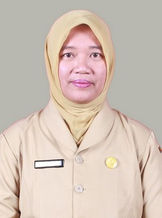
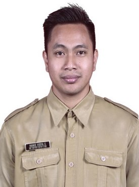
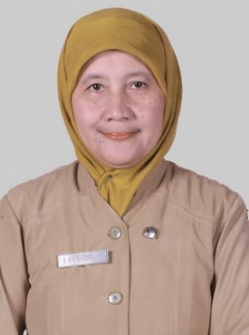
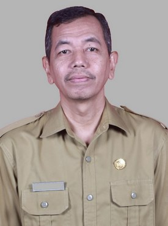

Kepala Jurusan
Erlitawanty M.Pd.
Penanggung jawab jurusan TKJ
SMK Negeri 5 Malang (dikenal dengan sebutan VOHISMA) didirikan pada tanggal 29 Januari 1998 berdasarkan SK Pendirian No. 13a/O/1998. Sekolah ini berlokasi di Jalan Ikan Piranha Atas, Kelurahan Tunjungsekar, Kecamatan Lowokwaru, Kota Malang, di atas tanah seluas 13.816 m². Awalnya SMKN 5 Malang memiliki keunggulan di bidang industri kreatif, dengan jurusan unggulan Kriya Kayu, Kriya Keramik (satu-satunya di Kota Malang), Kriya Tekstil, dan Busana Butik. Seiring perkembangan teknologi informasi, pada awal tahun 2000-an sekolah ini membuka jurusan Teknik Komputer dan Jaringan (TKJ) serta Rekayasa Perangkat Lunak (RPL) untuk menjawab kebutuhan industri digital. Pada tahun 2025, jurusan TKJ resmi bertransformasi menjadi Teknik Jaringan Komputer dan Telekomunikasi (TJKT) sejalan dengan kurikulum Merdeka Belajar dan kebutuhan dunia kerja. Di tahun yang sama, jurusan TJKT meresmikan Kelas Industri bekerja sama dengan PT. PLN Icon Plus untuk memperkuat keterampilan siswa di bidang jaringan dan telekomunikasi. Hingga kini SMKN 5 Malang telah terakreditasi A (Unggul) berdasarkan SK No. 1214/BAN-SM/SK/2018.
29 Januari 1998 — Pendirian SMKN 5 Malang. SMK Negeri 5 Malang resmi didirikan dengan jurusan Kriya Kayu, Kriya Keramik, Kriya Tekstil, dan Busana Butik.
2000-an — Pembukaan Jurusan TKJ. Jurusan Teknik Komputer dan Jaringan (TKJ) dibuka sebagai respons terhadap pesatnya teknologi informasi.
2018 — Akreditasi A (Unggul). SMKN 5 Malang meraih akreditasi A (Unggul) dari BAN-SM serta sertifikasi ISO 9001:2008.
2025 — Rebranding menjadi TJKT & Kelas Industri. Jurusan TKJ bertransformasi menjadi Teknik Jaringan Komputer dan Telekomunikasi (TJKT). Peresmian Kelas Industri bersama PT. PLN Icon Plus.
2025 — Lolos LKS Provinsi Jatim. Roslan, siswa TJKT kelas XII, berhasil mewakili Kota Malang di ajang Lomba Kompetensi Siswa (LKS) Provinsi Jawa Timur bidang Information Network Cabling.
Perkenalkan guru pengajar TKJ dengan pengalaman di jaringan, infrastruktur IT, dan keamanan siber.

Penanggung jawab jurusan TKJ

Pengajar Jaringan

Pengajar Jaringan
Pengajar Jaringan

Pengajar Jaringan

Pengajar Jaringan

Pengajar Jaringan
Contoh karya TKJ dalam bentuk foto dengan judul dan deskripsi singkat.

Dokumentasi instalasi jaringan dan server siswa TKJ.

Hasil konfigurasi jaringan berbasis server dan perangkat.

Proyek implementasi jaringan dan infrastruktur sekolah.